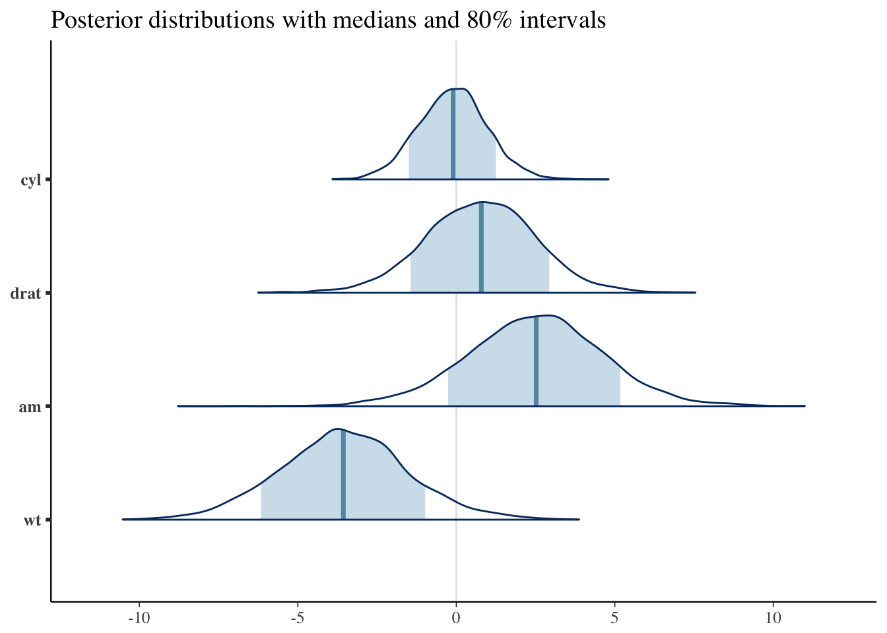
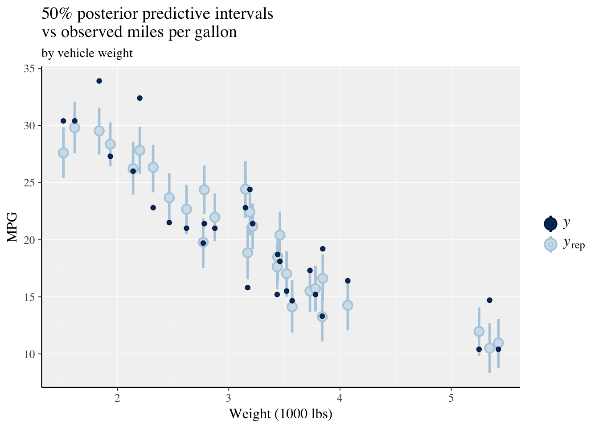

2 Development Plan
- Algorithm incorporation
- Joint pulses
- covariates
- Population model
- covariates
- Joint pulses
- Modularization/refactoring
- Manual/webbook
- Package features
- Summary and diagnostic functions
2.1 Software map
- Single subject
- Single hormone
- 2 hormones
- Options:
- Orderstat vs Strauss
- Changing baseline??
- Population model
- Single hormone
- Single group (no covariates)
- Covariates (> 1 group)
- Choose which parameters to do as a regression (- categorical parameters; - continuous parameters), others under single group assumptions.
- 2 hormones
- Single group
- non 1-to-1 (imperfect)
- 2 driver (method needed) (what does this mean?)
- Covariates (> 1 group)
- non 1-to-1, imperfect, ???pamm done (p), need v/nu?? (what does this mean?)
- 2 driver (method needed) (what does this mean?)
- Single group
- Single hormone
2.2 Base code versions for github archiving
All variations
Major versions
- Single-subject, single hormone
- Single-subject, associational (2-hormone)
- Population model, single hormone
- Population model, covariates, single hormone
- Population model, associational (2-hormone) hormone
- Population model, covariates, associational (2-hormone) hormone
Minor versions
- Fixed baseline vs. change-point baseline vs changing baseline (sinusoidal)
- Orderstat vs. Strauss prior on pulse location
- Log-normal vs. truncated t prior on mean mass/width
- Only truncated-t going forward
- Inverse Wishart vs. half-Cauchy vs. Uniform prior on re_sd
- Only Uniform prior going forward
Questions
- Terminology: driver/response OR trigger/response
Summary and diagnostic functions
mcmc_trace <- function() {}mcmc_posteriors <- function() {}mcmc_locations <- function() {}
STAN and other Bayesian R package functions to implement
Posterior predicted values/plot
rstanarm::posterior_predict()rstanarm::ppc_dens_overlay()rstanarm::ppc_intervals()
Posterior densities
rstanarm::mcmc_areas()
#--------------------------------------------
# STAN examples
# Some examples http://mc-stan.org/bayesplot/
#--------------------------------------------
library(bayesplot)
library(rstanarm)
library(ggplot2)
fit <- stan_glm(mpg ~ ., data = mtcars)##
## SAMPLING FOR MODEL 'continuous' NOW (CHAIN 1).
##
## Gradient evaluation took 2.1e-05 seconds
## 1000 transitions using 10 leapfrog steps per transition would take 0.21 seconds.
## Adjust your expectations accordingly!
##
##
## Iteration: 1 / 2000 [ 0%] (Warmup)
## Iteration: 200 / 2000 [ 10%] (Warmup)
## Iteration: 400 / 2000 [ 20%] (Warmup)
## Iteration: 600 / 2000 [ 30%] (Warmup)
## Iteration: 800 / 2000 [ 40%] (Warmup)
## Iteration: 1000 / 2000 [ 50%] (Warmup)
## Iteration: 1001 / 2000 [ 50%] (Sampling)
## Iteration: 1200 / 2000 [ 60%] (Sampling)
## Iteration: 1400 / 2000 [ 70%] (Sampling)
## Iteration: 1600 / 2000 [ 80%] (Sampling)
## Iteration: 1800 / 2000 [ 90%] (Sampling)
## Iteration: 2000 / 2000 [100%] (Sampling)
##
## Elapsed Time: 0.405155 seconds (Warm-up)
## 0.360766 seconds (Sampling)
## 0.765921 seconds (Total)
##
##
## SAMPLING FOR MODEL 'continuous' NOW (CHAIN 2).
##
## Gradient evaluation took 2.7e-05 seconds
## 1000 transitions using 10 leapfrog steps per transition would take 0.27 seconds.
## Adjust your expectations accordingly!
##
##
## Iteration: 1 / 2000 [ 0%] (Warmup)
## Iteration: 200 / 2000 [ 10%] (Warmup)
## Iteration: 400 / 2000 [ 20%] (Warmup)
## Iteration: 600 / 2000 [ 30%] (Warmup)
## Iteration: 800 / 2000 [ 40%] (Warmup)
## Iteration: 1000 / 2000 [ 50%] (Warmup)
## Iteration: 1001 / 2000 [ 50%] (Sampling)
## Iteration: 1200 / 2000 [ 60%] (Sampling)
## Iteration: 1400 / 2000 [ 70%] (Sampling)
## Iteration: 1600 / 2000 [ 80%] (Sampling)
## Iteration: 1800 / 2000 [ 90%] (Sampling)
## Iteration: 2000 / 2000 [100%] (Sampling)
##
## Elapsed Time: 0.40472 seconds (Warm-up)
## 0.366154 seconds (Sampling)
## 0.770874 seconds (Total)
##
##
## SAMPLING FOR MODEL 'continuous' NOW (CHAIN 3).
##
## Gradient evaluation took 1.6e-05 seconds
## 1000 transitions using 10 leapfrog steps per transition would take 0.16 seconds.
## Adjust your expectations accordingly!
##
##
## Iteration: 1 / 2000 [ 0%] (Warmup)
## Iteration: 200 / 2000 [ 10%] (Warmup)
## Iteration: 400 / 2000 [ 20%] (Warmup)
## Iteration: 600 / 2000 [ 30%] (Warmup)
## Iteration: 800 / 2000 [ 40%] (Warmup)
## Iteration: 1000 / 2000 [ 50%] (Warmup)
## Iteration: 1001 / 2000 [ 50%] (Sampling)
## Iteration: 1200 / 2000 [ 60%] (Sampling)
## Iteration: 1400 / 2000 [ 70%] (Sampling)
## Iteration: 1600 / 2000 [ 80%] (Sampling)
## Iteration: 1800 / 2000 [ 90%] (Sampling)
## Iteration: 2000 / 2000 [100%] (Sampling)
##
## Elapsed Time: 0.367577 seconds (Warm-up)
## 0.441112 seconds (Sampling)
## 0.808689 seconds (Total)
##
##
## SAMPLING FOR MODEL 'continuous' NOW (CHAIN 4).
##
## Gradient evaluation took 1.6e-05 seconds
## 1000 transitions using 10 leapfrog steps per transition would take 0.16 seconds.
## Adjust your expectations accordingly!
##
##
## Iteration: 1 / 2000 [ 0%] (Warmup)
## Iteration: 200 / 2000 [ 10%] (Warmup)
## Iteration: 400 / 2000 [ 20%] (Warmup)
## Iteration: 600 / 2000 [ 30%] (Warmup)
## Iteration: 800 / 2000 [ 40%] (Warmup)
## Iteration: 1000 / 2000 [ 50%] (Warmup)
## Iteration: 1001 / 2000 [ 50%] (Sampling)
## Iteration: 1200 / 2000 [ 60%] (Sampling)
## Iteration: 1400 / 2000 [ 70%] (Sampling)
## Iteration: 1600 / 2000 [ 80%] (Sampling)
## Iteration: 1800 / 2000 [ 90%] (Sampling)
## Iteration: 2000 / 2000 [100%] (Sampling)
##
## Elapsed Time: 0.391307 seconds (Warm-up)
## 0.407167 seconds (Sampling)
## 0.798474 seconds (Total)posterior <- as.matrix(fit)
plot_title <- ggtitle("Posterior distributions with medians and 80% intervals")
mcmc_areas(posterior, pars = c("cyl", "drat", "am", "wt"), prob = 0.8) +
plot_title
ppc_intervals(y = mtcars$mpg, yrep = posterior_predict(fit), x = mtcars$wt, prob = 0.5) +
labs(x = "Weight (1000 lbs)",
y = "MPG",
title = "50% posterior predictive intervals \nvs observed miles per gallon",
subtitle = "by vehicle weight") +
panel_bg(fill = "gray95", color = NA) +
grid_lines(color = "white")